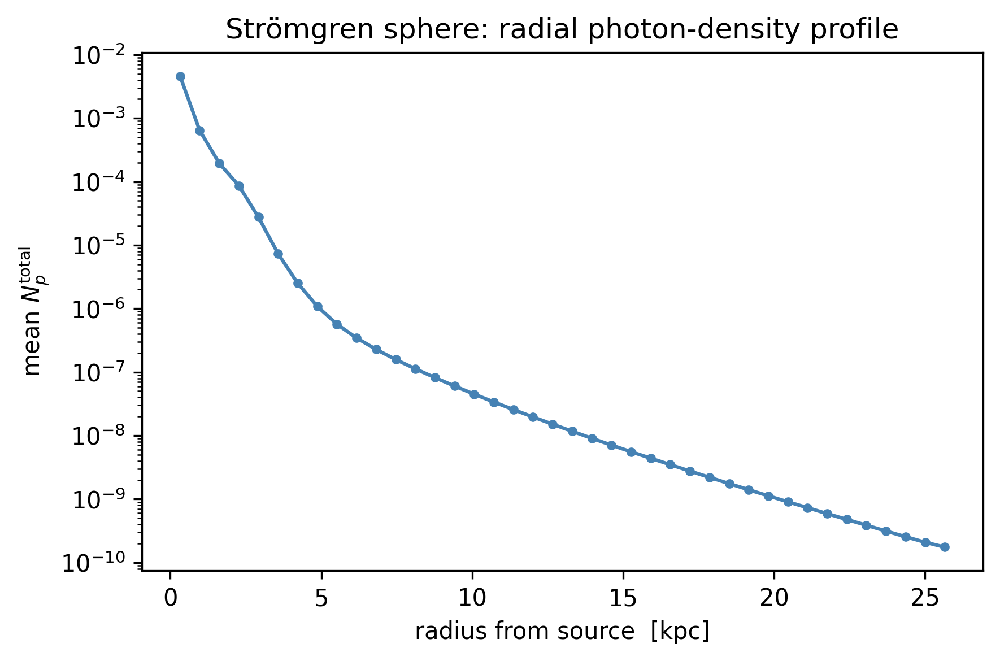
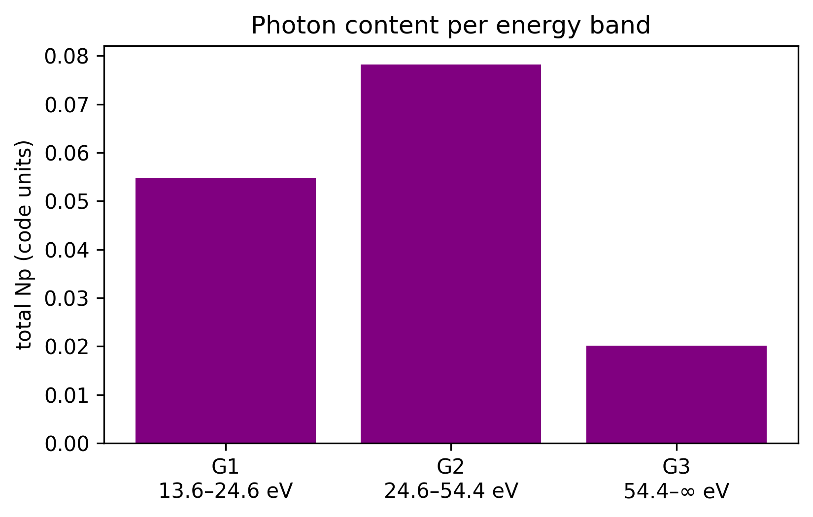
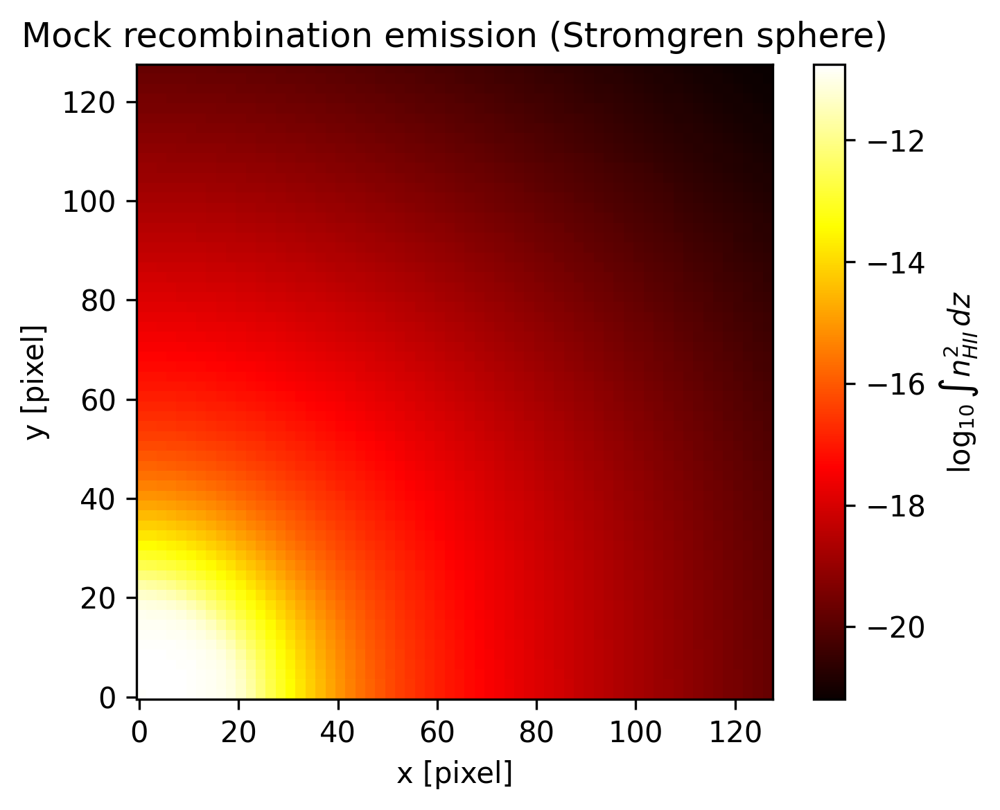
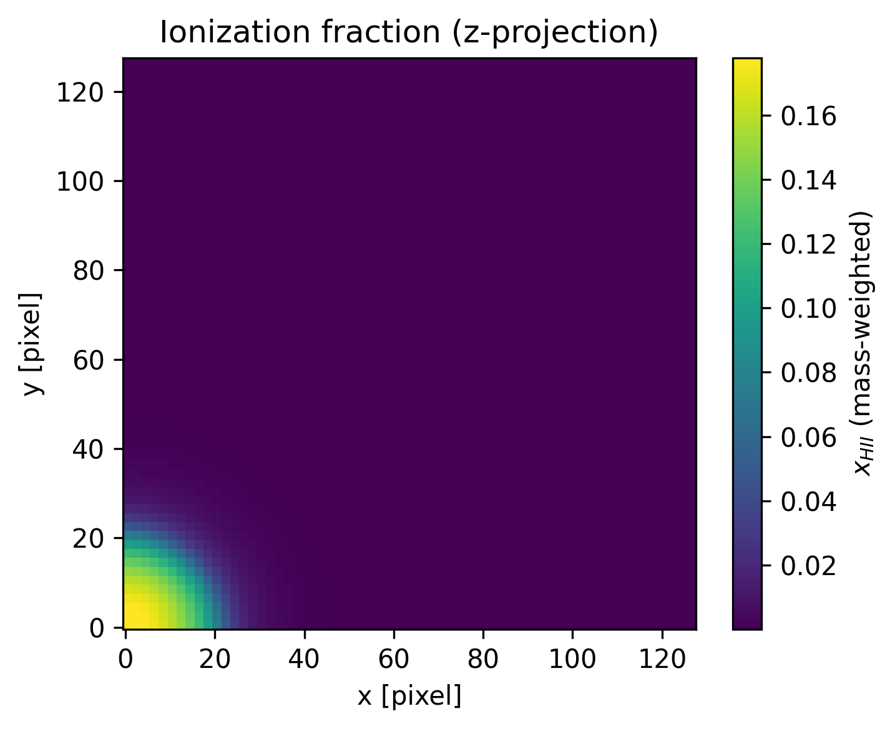
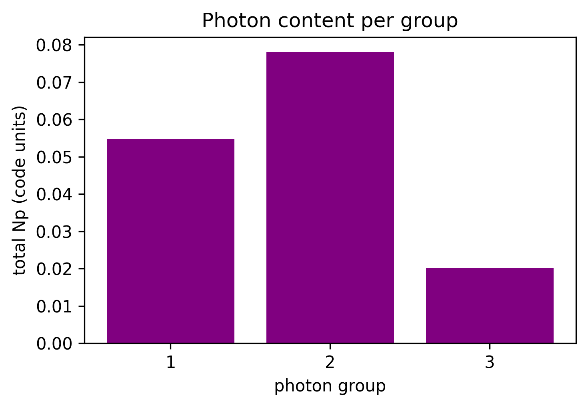

10. Radiative Transfer (RT)
RAMSES can run with radiative transfer (RT=1): each cell carries, per photon group g, a photon number density Npgand the photon fluxFxg/Fyg/Fzg (so nvarrt = 4 · nGroups). Mera reads these with getrt, analogous to gethydro.
This tutorial shows how to open, inspect, getvar, plot, and select regions of RT data. (2D projection maps for RT are a work in progress.)
Test simulation
The example uses the standard RAMSES Strömgren-sphere RT test (stromgren.nml, shipped with RAMSES, here ramses-2025.05, NGROUPS=3, NIONS=1, AMR level 6→7): a point source ionizing a uniform neutral medium — the classic RT benchmark. The output was produced locally by running that namelist; it is not redistributed.
Open and inspect
getinfo shows the RT block (number of photon groups, ionization fractions, …); getrt loads the leaf-cells into an RtDataType.
using Mera
info = getinfo(3, "/Volumes/FASTStorage/Simulations/Mera-Tests/rt_stromgren");[ Info: Precompiling Mera [02f895e8-fdb1-4346-8fe6-c721699f5126] (cache misses: include_dependency fsize change (6), wrong dep version loaded (4), wrong source (2), mismatched flags (6))
SYSTEM: caught exception of type :MethodError while trying to print a failed Task notice; giving up
*__ __ _______ ______ _______
| |_| | | _ | | _ |
| | ___| | || | |_| |
| | |___| |_||_| |
| | ___| __ | |
| ||_|| | |___| | | | _ |
|_| |_|_______|___| |_|__| |__|
[Mera]: 2026-06-02T11:16:04.337
Code: RAMSES
output [3] summary:
mtime: 2026-06-01T21:54:33.519
ctime: 2026-06-01T21:54:33.519
=======================================================
simulation time: 20.02 [Myr]
boxlen: 15.0 [kpc]
ncpu: 1
ndim: 3
cosmological: false
-------------------------------------------------------
amr: true
level(s): 6 - 7 --> cellsize(s): 234.38 [pc] - 117.19 [pc]
-------------------------------------------------------
hydro: true
hydro-variables:
8 --> (:rho, :vx, :vy, :vz, :p, :var6, :var7, :var8)
hydro-descriptor: (:density, :velocity_x, :velocity_y, :velocity_z, :pressure, :scalar_00, :scalar_01, :scalar_02)
γ: 1.4
gravity: false
particles: false
-------------------------------------------------------
rt: true
rt-variables: 12
nIons: 3
nGroups: 3
iIons: 6
-------------------------------------------------------
clumps: false
-------------------------------------------------------
namelist-file: (
"&COOLING_PARAMS", "&AMR_PARAMS", "&OUTPUT_PARAMS", "&BOUNDARY_PARAMS", "&RT_PARAMS", "&RT_GROUPS\t\t\t! Blackbody at T=1d5 Kelvin", "&UNITS_PARAMS", "&RUN_PARAMS", "&HYDRO_PARAMS", "&INIT_PARAMS", "&REFINE_PARAMS")
-------------------------------------------------------
timer-file: true
compilation-file: true
makefile: true
patchfile: true
=======================================================info.rt, info.nvarrt, info.rt_variable_list(true, 12, [:Np1, :Fx1, :Fy1, :Fz1, :Np2, :Fx2, :Fy2, :Fz2, :Np3, :Fx3, :Fy3, :Fz3])rt = getrt(info);[Mera]: Get RT data: 2026-06-02T11:16:09.115
Key vars=(:level, :cx, :cy, :cz)
Using var(s)=(1, 2, 3, 4, 5, 6, 7, 8, 9, 10, 11, 12) = (:Np1, :Fx1, :Fy1, :Fz1, :Np2, :Fx2, :Fy2, :Fz2, :Np3, :Fx3, :Fy3, :Fz3)
domain:
xmin::xmax: 0.0 :: 1.0 ==> 0.0 [kpc] :: 15.0 [kpc]
ymin::ymax: 0.0 :: 1.0 ==> 0.0 [kpc] :: 15.0 [kpc]
zmin::zmax: 0.0 :: 1.0 ==> 0.0 [kpc] :: 15.0 [kpc]
📊 Processing Configuration:
Total CPU files available: 1
Files to be processed: 1
Compute threads: 4
GC threads: 4
Processing files: 100%|██████████████████████████████████████████████████| Time: 0:00:00 ( 1.00 s/it)
✓ File processing complete! Combining results...
✓ Data combination complete!
Final data size: 262144 cells, 12 variables
Threading: 4 threads for 16 columns
Max threads requested: 4
Available threads: 4
Using parallel processing with 4 threads
Creating IndexedTable with 16 columns...
Memory used for data table :32.001564025878906
MB
-------------------------------------------------------rt.dataTable with 262144 rows, 16 columns:
Columns:
# colname type
────────────────────
1 level Int64
2 cx Int64
3 cy Int64
4 cz Int64
5 Np1 Float64
6 Fx1 Float64
7 Fy1 Float64
8 Fz1 Float64
9 Np2 Float64
10 Fx2 Float64
11 Fy2 Float64
12 Fz2 Float64
13 Np3 Float64
14 Fx3 Float64
15 Fy3 Float64
16 Fz3 Float64Variables with getvar
Raw RT variables (:Np1, :Fx1, …), the per-group flux magnitude :Fmagg, the **total** photon density:Nptotal, and the usual geometry (:x/:y/:z,:cellsize,:rsphere`, …) all work.
np_total = getvar(rt, :Np_total)
fmag1 = getvar(rt, :Fmag1)
(Np_total_max = maximum(np_total), Fmag1_max = maximum(fmag1))(Np_total_max = 0.009354164109193559, Fmag1_max = 0.0005397420584191681)Plot: photon-density distribution
using PyPlot
rc("figure", dpi=300); rc("savefig", dpi=300)
figure(figsize=(6,4))
hist(log10.(np_total[np_total .> 0]), bins=60, color="darkorange")
xlabel(L"$\log_{10}\,N_p^{\rm total}$ (code units)"); ylabel("number of cells")
title("Photon density distribution"); tight_layout();
Radial profile of the Strömgren sphere
The source sits at the box corner. Binning the total photon density by distance from the source shows the radial fall-off / ionization front.
r = getvar(rt, :r_sphere, :kpc, center=[0.,0.,0.])
np = getvar(rt, :Np_total)
nbins = 40; rmax = maximum(r)
edges = range(0, rmax, length=nbins+1)
centers = [(edges[i]+edges[i+1])/2 for i in 1:nbins]
prof = [ (m = (r .>= edges[i]) .& (r .< edges[i+1]); any(m) ? sum(np])/count(m) : 0.0) for i in 1:nbins ]
figure(figsize=(6,4))
plot(centers, prof, "-o", ms=3, color="steelblue")
yscale("log"); xlabel("radius from source [kpc]"); ylabel(L"mean $N_p^{\rm total}$")
title("Strömgren sphere: radial photon-density profile"); tight_layout();
Region selection (subregion / shellregion)
subregion and shellregion work on RT data like on hydro — useful for slices and shells. Here: a sphere and a radial shell around the box center.
sub = subregion(rt, :sphere, radius=5., center=[:bc], range_unit=:kpc)
shell = shellregion(rt, :sphere, radius=[3.,6.], center=[:bc], range_unit=:kpc)
(all_cells = length(rt.data), in_sphere = length(sub.data), in_shell = length(shell.data))[Mera]: 2026-06-02T11:16:23.151
center: [0.5, 0.5, 0.5] ==> [7.5 [kpc] :: 7.5 [kpc] :: 7.5 [kpc]]
domain:
xmin::xmax: 0.1666672 :: 0.8333345 ==> 2.5 [kpc] :: 12.5 [kpc]
ymin::ymax: 0.1666672 :: 0.8333345 ==> 2.5 [kpc] :: 12.5 [kpc]
zmin::zmax: 0.1666672 :: 0.8333345 ==> 2.5 [kpc] :: 12.5 [kpc]
Radius: 5.0 [kpc]
Memory used for data table :5.523414611816406
MB
-------------------------------------------------------
[Mera]: 2026-06-02T11:16:24.527
center: [0.5, 0.5, 0.5] ==> [7.5 [kpc] :: 7.5 [kpc] :: 7.5 [kpc]]
domain:
xmin::xmax: 0.1000005 :: 0.9000012 ==> 1.5 [kpc] :: 13.5 [kpc]
ymin::ymax: 0.1000005 :: 0.9000012 ==> 1.5 [kpc] :: 13.5 [kpc]
zmin::zmax: 0.1000005 :: 0.9000012 ==> 1.5 [kpc] :: 13.5 [kpc]
Inner radius: 3.0 [kpc]
Outer radius: 6.0 [kpc]
Radius diff: 3.0 [kpc]
Memory used for data table :8.088722229003906
MB
-------------------------------------------------------(all_cells = 262144, in_sphere = 45235, in_shell = 66250)Projection (2D maps)
projection works on RT data too. RT has no mass, so it defaults to volume-weighting. Project the total photon density along z; a thin zrange gives a slice.
proj = projection(rt, :Np_total, verbose=false, show_progress=false)
figure(figsize=(5,4))
imshow(log10.(permutedims(proj.maps[:Np_total]) .+ 1e-50), origin="lower", cmap="inferno")
colorbar(label=L"$\log_{10}\,N_p^{\rm total}$"); title("RT projection: total photon density (z)")
xlabel("x [pixel]"); ylabel("y [pixel]"); tight_layout();
Mock emission map (RT ionization + gas density)
A recombination-line image (e.g. H$\alpha$) is the line-of-sight integral of the emissivity $j \propto n_e n_{\rm HII} \approx n_{\rm HII}^2$. This is a hydro-derived quantity: the ionization fraction lives in the hydro data, and Mera auto-locates it from the RT descriptor (iIons). getvar(gas, :em_recomb) gives $n_{\rm HII}^2$; projecting it with mode=:sum yields the synthetic emission map of the HII region.
gas = gethydro(info, verbose=false, show_progress=false)
em_map = projection(gas, :em_recomb, mode=:sum, verbose=false, show_progress=false)
figure(figsize=(5,4))
imshow(log10.(permutedims(em_map.maps[:em_recomb]) .+ 1e-40), origin="lower", cmap="hot")
colorbar(label=L"$\log_{10}\int n_{HII}^2\,dz$"); title("Mock recombination emission (Stromgren sphere)")
xlabel("x [pixel]"); ylabel("y [pixel]"); tight_layout(); 1.105034 seconds (11.67 M allocations: 732.660 MiB, 4.80% gc time, 62.52% compilation time: 5% of which was recompilation)
Ionization map
The ionization state lives in the hydro data; :xHII is auto-located via the RT descriptor (iIons). Projecting it shows the ionized region (the Strömgren sphere).
xhii_map = projection(gas, :xHII, verbose=false, show_progress=false)
figure(figsize=(5,4))
imshow(permutedims(xhii_map.maps[:xHII]), origin="lower", cmap="viridis")
colorbar(label=L"$x_{HII}$ (mass-weighted)"); title("Ionization fraction (z-projection)")
xlabel("x [pixel]"); ylabel("y [pixel]"); tight_layout();
Photon spectrum (per group)
Total photon content per group — the spectral distribution of the radiation field.
ngroups = info.nvarrt ÷ 4
totals = [sum(getvar(rt, Symbol("Np", g))) for g in 1:ngroups]
figure(figsize=(5,3.5))
bar(1:ngroups, totals, color="purple")
xlabel("photon group"); ylabel("total Np (code units)"); xticks(1:ngroups)
title("Photon content per group"); tight_layout();
Summary
| call | result |
|---|---|
getrt(info) | load RT leaf-cells → RtDataType |
getvar(rt, :Np1) / :Fx1 … | raw photon density / flux per group |
getvar(rt, :Fmag1) | flux magnitude per group |
getvar(rt, :Np_total) | total photon density (Σ groups) |
getvar(rt, :x/:r_sphere/:cellsize) | geometry (shared with hydro) |
subregion / shellregion | spatial selection / slices |
All shown above run on the RtDataType from getrt; the emission map uses the hydro object.